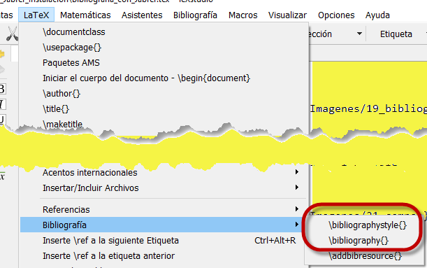

USANDO BibTeX PARA LA BIBLIOGRAFÍA CON LATEX
1. Propósito1.1 Preparando la base de datos1.2. Descargando información bibliográfica en Google Scholar1.3. Un primer archivo ∗.bib2. Manejo de la base de datos con Jabref2.1. Link para descargar Jabref - Versión 5.22.2. Inserción de nuevos registros3. Bibliografía estilo Harvard3.1. Archivos ∗.sty, ∗.bst3.2. Modificar harvardand por y en el archivo agsm.bst3.3. Generar archivo ∗.bbl4. Incluir referencia de página web5. Campos obligatorios para las referencias6. Insertar referencia bibliográfica desde JabrefReferencias Bibliográficas
1. Propósito
Ofrecer una buena opción para el manejo de la bibliografía de un documento elaborado con LATEX.
BibTeX es un programa auxiliar de LATEX, diseñado para facilitar el manejo de la bibliografía. Pero es más que eso: es también una herramienta que permite a LATEX extraer datos de una base de datos e insertarlos adecuadamente formateados en un documento (Ataz López 2006).
1.1 Preparando la base de datos
La bibliografía puede organizarse en un archivo (fichero), que se conoce como base de datos, que puede ser creado desde el mismo programa TeXstudio. Es conveniente guardar esta base de datos en la carpeta que ya contiene el archivo del trabajo que se está elaborando.
La información bibliográfica de un texto, un artículo, una página web, entre otros, constituye un registro y este a su vez está formado por campos. Los campos contienen información básica (obligatoria) y otra opcional (Ataz López 2006, pág. 14).
Veamos el "aspecto" de dos registros, libro y artículo, los cuales en la línea 1 muestran su naturaleza enseguida del símbolo arroba @:
1 @book{``espacio para el bibtexkey'',2 title = ``obligatorio'',3 author = ``obligatorio'',4 publisher = ``obligatorio'',5 year = ``obligatorio'',6 isbn = ``opcional'',7 series = ``opcional'',8 edition = ``opcional'',9 volume = ``opcional'',10 url = ``opcional''11 }
xxxxxxxxxx1 @article{``espacio para el bibtexkey'',2 title = ``obligatorio'',3 author = ``obligatorio'',4 publisher = ``NO'',5 journal = ``obligatorio'',6 year = ``obligatorio'',7 issn = ``opcional'',8 doi = ``opcional'',9 volume = ``opcional'',10 issue = ``opcional'',11 pages = ``opcional'',12 url = ``opcional''13 }
Nota 1:
El "
bibtexkey" mencionado en la línea 1 se requiere para poder referenciar los registros (textos, artículos, . . .) con el uso de la instrucción \cite{}.
Así que, estando en la consola de TeXstudio se crea un nuevo documento pulsando
y se deja abierta esta base de datos para ir "pegando" los registros que se vayan necesitando.
1.2. Descargando información bibliográfica en Google Scholar
En este archivo *.bib podemos ir recolectando información que luego será procesada.
En Google Académico 1 hay información bibliográfica de una buena cantidad de textos y artículos. En la imagen anterior se ha insertado el título de un libro: Chaos in Real Data: The Analysis of Non-Linear Dynamics from Short Ecological Time Series y, como se puede observar en la imagen anterior existe la información que necesitamos. Justamente se accede mediante las
"comillas" a una nueva página, en la cual eligiendo la opción Bibtex, se llega finalmente a la descripción bibliográfica necesaria:
| Figura 3: Información del registro |
Así que para el primer libro que ingresamos en Google Scholar, el registro es el siguiente, con los campos obligatorios:
xxxxxxxxxx1 @book{perry2012chaos,2 title={Chaos in real data: the analysis of non-linear dynamics from short ecological time series},3 author={Perry, Joe N and Smith, Robert H and Woiwod, Ian P and Morse, David R},4 volume={27},5 year={2012},6 publisher={Springer Science \& Business Media}7 }Si ahora se hace la búsqueda para el artículo con título: Determining the degree of chaos from analysis of ISI time series in the nervous system: a comparison between correlation dimension and nonlinear forecasting methods se obtiene el registro, que contiene los campos obligatorios, pero se anula el de publisher (sólo corresponde a libros):
xxxxxxxxxx1 @article{yunfan1998determining,2 title={Determining the degree of chaos from analysis of ISI time series in the nervous system: a comparison between correlation dimension and nonlinear forecasting methods},3 author={Yunfan, Gong and Jianxue, Xu and Wei, Ren and Sanjue, Hu and Fuzhou, Wang},4 journal={Biological Cybernetics},5 volume={78},6 number={2},7 pages={159--165},8 year={1998},9 publisher={}10 }Más adelante, en la Sección 5 se brindará información acerca de los campos que deben contener otros tipos de registros.
En cuanto al estilo de la bibliografía hay variedad de acuerdo con el área del conocimiento:
Plantillas APA: Psicología, Educación, Ciencias Económicas, Artes, Humanas y Sociales;
Plantillas IEEE: Ingenierías;
Plantillas Vancouver: Ciencias de la Salud.
Algunas páginas para observar estilos son:
xxxxxxxxxxhttps://www.reed.edu/cis/help/LaTeX/bibtexstyles.htmlhttps://www.bibtex.com/s/bibliography−style−misc−amsplain/https://www.bibtex.com/s/bibliography−style−economic−cje/https://www.bibtex.com/s/bibliography−style−gatech−thesis−gatech−thesis/https://www.bibtex.com/s/bibliography−style−din1505−abbrvdin/1.3. Un primer archivo ∗.bib
Veamos cómo luce el archivo textos_articulo.bib que se había sugerido crear, con la información lograda a través de Google Académico, una vez se pegaron (y grabado) los datos del libro y del artículo anteriores:
| Figura 4: Base de datos textos_articulo.bib con dos registros |
2. Manejo de la base de datos con Jabref
JabRef es una gestor de referencias bibliográficas que genera archivos .bib utilizados por LATEX. Se trata de un programa de software libre disponible para los sistema operativos más usuales (GNU/Linux, MAC OS X y MS Windows) (Torres Ninahuanca 2014, pág. 3).
2.1. Link para descargar Jabref - Versión 5.2
Se puede descargar en
xxxxxxxxxxhttps://www.fosshub.com/JabRef.html
2.2. Inserción de nuevos registros
A medida que se avanza en el archivo LATEX van surgiendo más fuentes bibliográficas para ser referenciadas y precisamente el programa Jabref se constituye en un buen aliado en esa tarea, permitiendo suprimir alguna(s) según la necesidad, a lo largo de la elaboración del trabajo.
Al abrir el programa Jabref, en la parte superior vemos

Para construir un archivo (base de datos), en File se despliegan opciones, y allí se elige
New library
New BibTeX library
como se aprecia en la imagen y enseguida se procede a asignarle un nombre
teniendo precaución de agregarle la extensión. Por ejemplo se puede crear

Ahora, vamos a insertar un primer texto. Elegimos un libro sobre LATEX de Mora W., Borbón.
Vamos a buscarlo en Google scholar (académico), como se hizo en la sección 1.2:
hasta obtener el registro
Entonces, la información bibliográfica se copia en Jabref. Primero se indica que se va a incluir una nueva referencia, pulsando el "botón" con el símbolo + como se ve en la imagen de la izquierda y luego, en el panel de la parte inferior rotulado con {}BibTeX source se pega el código anterior:
La información anterior queda distribuida en los otros paneles, entonces si abrimos los dos primeros encontramos
No siempre la información existente en Google Académico es precisa. Por ejemplo en el caso elegido, está como Miscelanea, y sabemos que la referencia corresponde al tipo Book por lo que es necesario hacer algunas modificaciones:
- Cambiar Miscelanea por Book: La imagen siguiente muestra que sobre Miscelanea al hacer presión, aparecen dos líneas, la primera de ellas con leyenda BibTeX permite desplegar varios tipos de bibliografía, y en este caso se elige Book.
- En la primera pestaña, con rótulo Required fields, aparecen espacios llamados campos. En unos cuantos de ellos se lee información del texto elegido:
Author,Bibtexkey,Editor,Publisher,Title,year. Como se comentó en la Subsección 1.2, más adelante en la Sección 5 se encontrará información acerca de los campos según el tipo de referencia.

Hay advertencias del programa Jabref, destacadas como pequeños triángulos amarillos. En la línea Author aparece una letra mayúscula sola; es necesario que enseguida se coloque un punto. Además es importante escribir primero los apellidos seguidos de una coma y luego los nombres. El triángulo de advertencia en la línea Title se refiere a que existe mayúsculas no encerradas en llaves, de tal manera que al elaborar el pdf saldrían en minúsculas (posiblemente). Una opción sencilla es encerrar en llaves todo el título. Veamos el resultado de estos cambios:
Ya no hay triángulos de advertencia.
Nota 2 En Jabref es necesario para las tildes y la ñ usar código de máquina. En esta referencia que contiene dos autores los nombres de ellos se separan con la palabra and. Esto mismo se hace para un número mayor de autores.
3. Bibliografía estilo Harvard
El estilo Harvard de citas, sistema de autor-año o sistema de autor-fecha (entre otros nombres) es un estilo de cita que utiliza una forma abreviada de la referencia bibliográfica a la fuente de la cita (los apellidos de los autores, el año de edición y opcionalmente las páginas citadas) inmediatamente después del material citado dentro del texto; las referencias completas se encuentran ordenadas alfabéticamente en una sección aparte, generalmente llamada bibliografía2.
3.1. Archivos ∗.sty, ∗.bst
BibTeX opera con tres archivos. Un archivo Auxiliar ( *.aux), producido cuando LATEX se ejecuta; un archivo BST ( *.bst) de estilo, que especifica el formato a usar para mostrar la bibliografía y un archivo de Bases de Datos (ya mencionado) que almacena su bibliografía3.
El estilo Harvard es empleado principalmente en física, ciencias naturales y ciencias sociales. Si se desea que al elaborar un LATEX la bibliografía tenga el estilo Harvard, se requiere que la carpeta del trabajo contenga los dos archivos siguientes:

Estos archivos se encuentran en la página de la Organización Ctan cuyo link es
xxxxxxxxxxhttps://ctan.org/pkg/harvardDe allí se descarga la carpeta
que los contiene.
Además el preámbulo del documento debe contener el paquete harvard, es decir, debe aparecer \usepackage{harvard}. Un posible preámbulo puede ser:
xxxxxxxxxx \documentclass[11pt,letterpaper]{article} \usepackage[utf8]{inputenc} \usepackage[spanish]{babel} \usepackage{amsmath} \usepackage{amsfonts} \usepackage{amssymb} \usepackage{graphicx} \usepackage[left=3.00cm, right=3.00cm, top=2.50cm, bottom=2.50cm]{geometry} \usepackage{harvard} \begin{document} ... cuerpo del documento ... \end{document}3.2. Modificar harvardand por y en el archivo agsm.bst
Los archivos .bst están configurados para el idioma inglés, de tal manera que cuando una referencia tiene varios autores, el último de ellos es agregado con la palabra and. De tal manera que se desea, para un trabajo en español, que aparezca la conjunción y a cambio de and o de pronto del signo comercial &.
En la página oficial Ctan.org con el link
xxxxxxxxxx https://www.ctan.org/tex−archive/macros/latex/contrib/harvard/se encuentra el archivo agsm.bst, al descargarlo (con Google Chrome) abre el contenido por lo que con el botón secundario del mouse se elige Guardar como y comienza la descarga. Luego se modifica para que tenga extensión .bst, para ello se abre con TeXstudio y se busca:
xxxxxxxxxx format.namesVeamos parte del contenido:
En el link
xxxxxxxxxx https://ctan.org/tex−archive/biblio/bibtex/basese pueden encontrar otros archivos ∗.bst.
3.3. Generar archivo ∗.bbl
"El formato de archivo .bib se utiliza para describir referencias bibliográficas. Cuando se usa junto con LATEX y BibTeX, genera un archivo con la extensión .bbl, que en realidad es solo un archivo tex con una extensión diferente que contiene sus referencias formateadas de acuerdo con el estilo de bibliografía elegido en su archivo .tex a través de \bibligraphystyle {} ´´4.
Una vez se tenga la base de datos a la cual, como se señaló antes, posteriormente se le pueden adicionar o suprimir otras referencias, se pasa a preparar el archivo para el documento. Un preámbulo puede ser como el que se muestra y, en el cuerpo del documento se incluyen tres líneas relacionadas con la construcción de las referencias bibliográficas. Estas son
xxxxxxxxxx1 \nocite{*}2 \bibliographystyle{agsm}% Para el estilo harvard3 \bibliography{guia_jabref}% Base de datosque aparecen en las líneas 12, 16 y 17:
xxxxxxxxxx1 \documentclass[11pt,letterpaper]{article}2 \usepackage[utf8]{inputenc}3 \usepackage[spanish]{babel}4 \usepackage{amsmath}5 \usepackage{amsfonts}6 \usepackage{amssymb}7 \usepackage{graphicx}8 \usepackage[left=3.00cm, right=3.00cm, top=2.50cm, bottom=2.50cm]{geometry}9 \usepackage{harvard}10 \usepackage{url}11 \begin{document}12 \nocite{*}13 ...14 cuerpo del documento15 ...16 \bibliographystyle{agsm}% Para el estilo harvard17 \bibliography{guia_jabref}% Base de datos18 \end{document}Nota 3 La instrucción
\nocite{∗}"obliga" a que aparezcan todas las referencias que hay en la base de datos. Las dos últimas instrucciones se pueden tomar de:

El archivo de extensión .bbl que se generará contiene las referencias con el archivo de estilo elegido. Entonces, se compila con
Se ha resaltado que hay una advertencia sobre la referencia de Mora & Borbón. Con precisión señala que el campo Publisher está vacío. Este campo se refiere a la Editorial que publica el libro. Así que si revisamos y arreglamos ese dato
Una vez ha ejecutado
Nota 4 Cada vez que adicione una nueva entrada en Jabref, debe grabar, por ejemplo usando teclas
Ctrl +S . Luego al compilar, posiblemente las referencias se actualicen sin necesidad de usarF8 , sin embargo conviene hacerlo para leer alguna observación sobre algún campo faltante o incorrecto.
4. Incluir referencia de página web
En el preámbulo debe agregarse el paquete url. Tomado de Gray (2008, pág. 3), vemos los campos que contiene este tipo de referencia:
xxxxxxxxxx @Webpage{apastyle, url = {http://www.apastyle.org/elecref.html}, author = {{American Psychological Association}}, title = {Electronic References}, year = 2001, lastchecked = {23 October 2002}, note = {Excerpted from 5th edition of the APA Publication Manual} }Y en la consola del programa Jabref se verá:
Debe tener la precaución de anteponer el (backslash) a símbolos como ? y _ (guión bajo) que aparezcan en cada dirección URL. Algunas direcciones URL son extensas, para lo cual se usa \usepackage\[hyphens\]{url} para que las "parta" adecuadamente ajustándolas al margen definido.
5. Campos obligatorios para las referencias
Cada tipo de referencia o entrada tiene unos campos obligatorios, como se puede consultar en Ataz López (2006, pág. 14), algunos de los cuales se muestran a continuación
xxxxxxxxxx Article (artículo): Un artículo publicado en una revista. Campos obligatorios: author, title, journal y year. Opcionales: volume, number, pages y month. Book (libro): Un libro normal. Campos obligatorios: author o editor, title, publisher y year. Opcionales: volume o number, series, address, edition y month. Booklet (folleto): Un trabajo impreso y distribuido pero sin que conste la editorial o institución que lo patrocina. Campo obligatorio: title. Campos opcionales: author, howpublished, address, month y year. Conference (conferencia): Idéntico a InProceedings. Se incluye exclusivamente para mantener la compatibilidad con el formato Scribe. InBook (dentro de un libro): Una parte de un libro, que puede ser un capítulo (o sección o similar) o un rango de páginas, o ambas cosas. Campos obligatorios: author o editor, title, chapter y/o pages, publisher y year. Opcionales: volume o number, series, type, address, edition y month. El campo title, en estas referencias, se refiere al título del libro, no al título del capítulo o grupo de páginas a que se refiere el registro. InCollection (en una colección): Una parte de un libro que tiene su propio título. Campos obligatorios: author, title, booktitle, publisher y year. Opcionales: crossref, editor, volume o number, series, type, chapter, pages, address, edition y month. InProceedings (en las actas): Una conferencia, artículo o ponencia en las actas de un congreso o, en general, en un libro que agrupe varios trabajos de autores distintos y con títulos independientes. Campos obligatorios: author, title, booktitle, year. Campos opcionales: crossref, editor, volume o number, series, pages, address, month, organization y publisher.
6. Insertar referencia bibliográfica desde Jabref
Se refiere a "escribir" la instrucción cite{bibid} eligiendo el correspondiente texto desde la base de datos en Jabref. La primera imágen muestra el cursor donde se desar insrtar la referencia:
Ahora se muestra en Jabref la línea del texto elegido y el icono para conectarse con el archivo en Texstudio:
Nota 5 Esta acción se puede realizar siempre y cuando la referencia bibliográfica tenga asignado un Bibtexkey.
Es frecuente aprovechar el tipo de una referencia para generar una del mismo tipo. Por ejemplo, en la imagen anterior está resaltada la tercera y se puede usar la secuencia
Entonces entra a la copia y procede a construir una nueva.
La imagen muestra la ubicación de este campo. En caso de estar vacío, basta "tocar" el "botón" Generate y el programa se encarga de asignar uno.
Volviendo al proceso de insertar referencia bibliográfica, luego de pulsar el "botón" TEX, aparece en Texstudio la instrucción cite{AtazLopez2006} pero la modificamos para incluír la página y cite se cambia por citeasnoun con el fin de llevar una redacción adecuada:
Referencias Bibliográficas
Ataz López, J. (2006), 'Guía casi completa de BIBTEX*'. URL: https://scholar.google.es/scholar?q=Guía casi completa de BIB- TEX*&hl=es&as_sdt=0,5
Gray, N. (2008), 'The urlbst package'. URL: https://www.sys.kth.se/docs/texlive/texmf-dist/doc/latex/urlbst/urlbst.pdf
Mora F., W. y Borbón A., A. (2017), Edición de textos científicos con LATEX, Revista digital Matemática Educación e Internet.
Torres Ninahuanca, C. (2014), 'Una breve introducción a JabRef'. URL: https://edumate.files.wordpress.com/2015/01/una-introduccic3b3n-breve-a- jabref.pdf
Williams, P. y Schnier, T. (2008), 'The Harvard Family of Bibliography Styles'. URL: http://mirrors.ucr.ac.cr/CTAN/macros/latex/contrib/harvard/harvard.pdf
| "Copyright © 2020 Grupo de Investigación en Estadística GIE" |